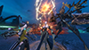
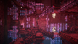
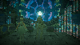
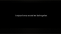

I beat it. I finished the People and the World. It was quite beautiful. The conclusion to every character's story was wonderful. What they did with Argo, Fio, Levania, Hina, Yuzuki, Mama, and 10H was unbelievable. And, shit, 10H! She's phenomenal! Probably one of my favorite NieR characters now.
The first 4 chapters - "overtures" - were quite okay. The first was the strongest, and the other 3 were, I mean, required for the entire conclusion to work, and have every character be involved, but still. The introduction of 10H at the beginning of Act II is unbelievable - the introduction to the physical, real world is jaw-dropping. All of Act II is quite insane, with it taking the form of NieR Automata's hacking sequences. Hina and Yuzuki's adventures are pretty, uh, great, and the implications they have on the greater NieR world are cool.
Act III, on Earth, is incredible. It's the second-best NieR experience I've ever had. It reveals information in an amazing way, it utilizes Fio and Levania perfectly, and it's. I mean. It's incredible. I feel like my words aren't powerful enough to convey the gravity of its splendor. I cannot communicate how impactful it all is when you go in blind.
It's a real tragedy it all shuts down at the end of the month. There's a lot of small, tragic details, but, idk. This deserves an offline version. There needs to be some recreation or continuation of NieR Re
Anyways, uh, here's my interpretation of the NieR timeline, now: {NieR Replicant/Gestalt (all endings + The Lost World) -> Automata (all endings + supplemental works) -> infinite loop} (quantum server is created and maintained) -> NieR Replicant ver.1.22474487139…'s Ending E (Kainé destroys quantum server for good) -> Doomed Automata timeline (the administrator She wipes out all of YoRHa, combines with the Red Girl, causes Re
If that's proven wrong by time, uh. Lol. Here's the Homestuck chart, finalized:
I'll revisit the game some more, until it's Over. Anyways, I'm off to see the Eclipse, today. Like Hina and Yuzuki.